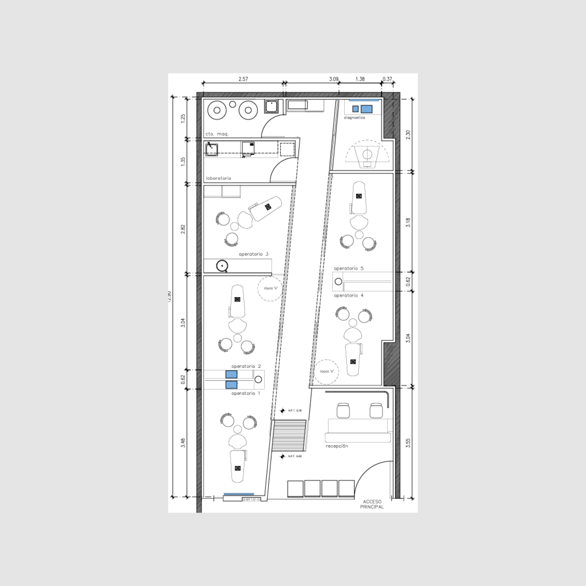
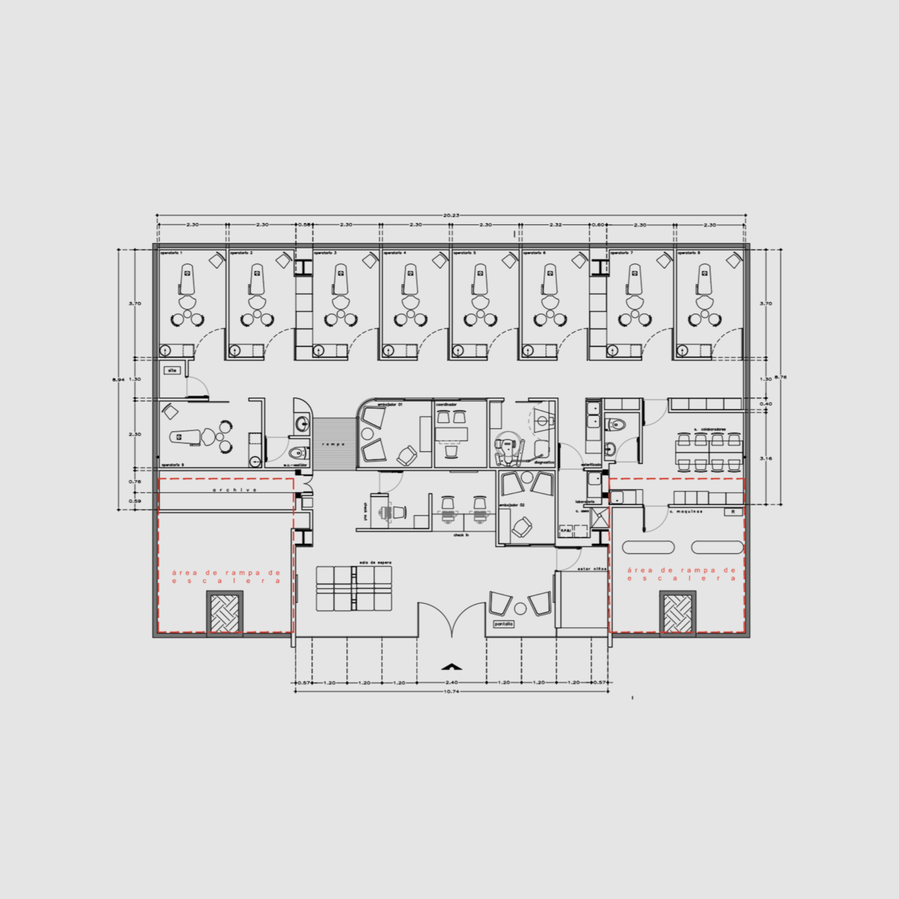
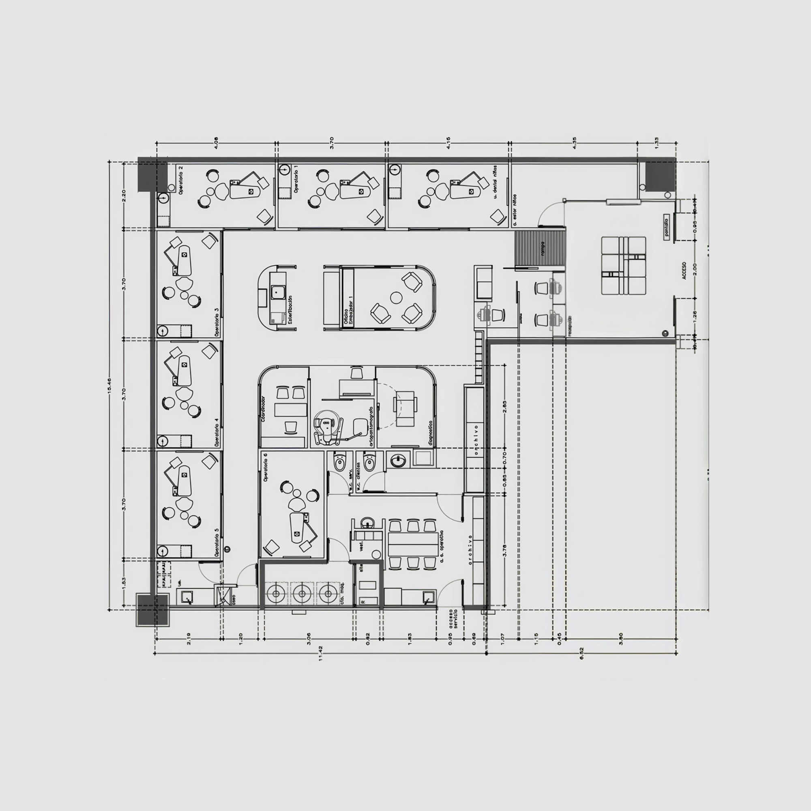

Cuánto espera un paciente desde que entra hasta que pasa a consultorio, por hora del día.
Cuándo y dónde se disparan las alertas de aglomeración en la sucursal.



Qué tanto se usa cada consultorio. Se considera ocupado con 2 o más personas dentro del área del consultorio.
La espera explicada: ¿se debe a la saturación de la sala o a consultorios que no se liberan?
Personas que cruzan la línea de entrada en recepción, día por día.
Pacientes que entran y salen sin pasar a consultorio, por franja horaria.